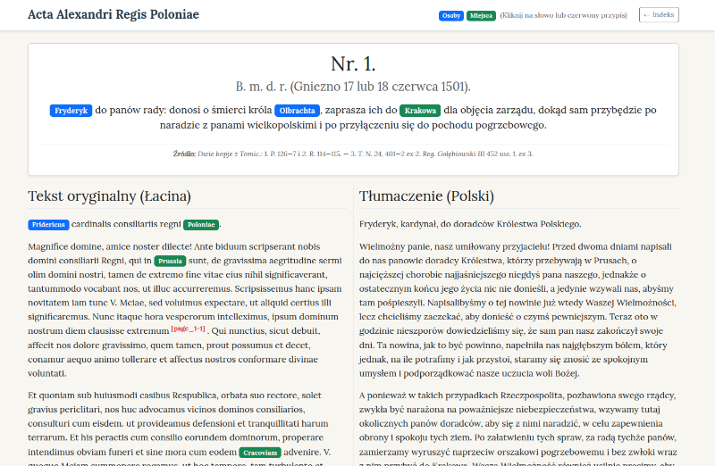
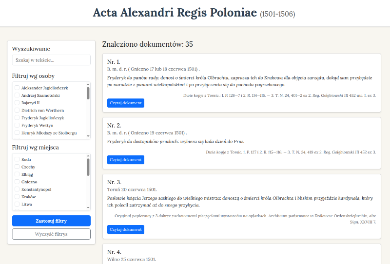

Od edycji papierowej do cyfrowej dzięki LLM?
Eksperyment z modelem Gemini na przykładzie „Acta Alexandri”
W obliczu rozwoju dużych modeli językowych (LLM), które coraz sprawniej radzą sobie z logiką, analizą kontekstową i redukcją halucynacji, zasadne stają się pytania: czy obecne generacje modeli pozwalają już na wiarygodne przetwarzanie źródeł w formie skanów i tekstów? Czy AI, która dotyka wielu innych dziedzin nauki i biznesu może też wpłynąć na świat cyfrowego edytorstwa?
W ramach eksperymentu przeprowadzonego w naszej Pracowni postanowiliśmy sprawdzić, czy osoby badające historię, bez wsparcia technicznego, korzystając z ogólnie dostępnego modelu LLM (znanego z dobrych wyników w rozpoznawaniu pisma - OCR i analizy obrazów) są w stanie półautomatycznie przeprowadzić proces konwersji drukowanej edycji źródłowej do wersji cyfrowej w standardzie TEI-XML, wzbogaconej o identyfikację encji (Entity Linking) oraz przygotować prostą lecz funkcjonalną aplikację webową.
Case Study: Acta Alexandri Regis Poloniae (1501-1506)
Za materiał źródłowy posłużyła edycja Fryderyka Papéego z 1927 roku: Acta Alexandri Regis Poloniae, Magni Ducis Lithuaniae etc.. Celem było przejście od skanów publikacji do prototypu łatwej w użyciu edycji cyfrowej, unikając zarówno pracy manualnej jak i pomocy programistów, tak by zasymulować sytuację samodzielnej pracy historyka / historyczki z AI. Za materiał testowy posłużyła próbka 11 stron (od fizycznej strony 19 do strony 29) ze zbioru skanów dostępnych w Kujawsko-Pomorskiej Bibliotece Cyfrowej, skany dostępne są jako Domena publiczna (Public domain)).
Metodologia i warsztat
Do realizacji zadania wykorzystano ogólnodostępne narzędzia: środowisko Google AI Studio oraz model Gemini 3.1 Pro. Proces został zaprojektowany tak, aby mogła go powtórzyć osoba bez zaawansowanego przygotowania technicznego:
- Podział i konwersja materiału: Ze względu na limity tokenów wyjściowych nie należy przetwarzać jednorazowo zbyt wielu stron, format djvu w którym dostępne są często skany w bibliotekach cyfrowych nie jest mile widziany przez modele językowe, można jednak ze skanów utworzyć pliki PDF np. zawierające po ok. 10-12 stron. Prostym sposobem konwersji jest aplikacja SumatraPDF, która czyta pliki djvu i można wczytane pliki 'wydrukować' do formatu pdf.
- Transkrypcja i strukturyzacja: W Google AI Studio zastosowano prompty, które wymusiły na modelu nie tylko samodzielny odczyt tekstu (nawet jeżeli jest obecna, warstwa OCR w plikach PDF bywa zawodna, zwłaszcza w przypadku kursywy), ale i analizę układu strony, podział na sekcje oraz zapis w formacie TEI-XML.
- Wzbogacenie (NER): Model automatycznie otagował osoby (
persName), miejsca (placeName) oraz daty (date). - Przekład: Kolejne kroki obejmowały automatyczne tłumaczenie dokumentów na język polski, co stanowi istotne ułatwienie w dostępie do treści źródłowej. Tłumaczenie również wykonał model Gemini Pro w aplikacji AI Studio.
- Identyfikacja: łączenie otagowanych wcześniej osób i miejsc z bazami referencyjnymi wspomagane modelem językowym. Podczas eksperymentu rolę narzędzia do indentyfikacji osób i miejsc (NEL) w tekście pełnił skrypt, ale już po jego zakończeniu przygotowana została uniwersalna aplikacja wykorzystująca model LLM i bazy referencyjne, nie wymagająca wiedzy informatycznej.
Załączony plik pdf to fragment edycji listów i dokumentów z kancelarii króla Aleksandra Jagiellończyka. Edycja została wydana w 1927 roku, przygotuj edycję cyfrową tych dokumentów.
Zadanie:
Transkrypcja tekstu ze stron pdf z zapisem w formacie TEI-XML. Należy zwrócić uwagę na układ tekstu.
Zwykle każda strona zawiera w nagłówku numer strony, rok którego dotyczą dokumenty na stronie oraz numery dokumentów występujące na stronie na przykład: "9 1501 Nr. 10".
Każdy list lub dokument ma wyrażnie określone sekcje: zaczyna się od nagłówka w postaci wytłuszczonego napisu z numerem dokumentu np. Nr 8
Pod numerem znajduje się zapis kursywą z miejscem i datą dokumentów. W tej sekcji może wystąpić skrót B. m. d. r., który oznacza: Bez miejsca, dnia, roku, zaś po nim występuje często w nawiasie informacja o miejscu i dacie, ale są to dane zrekonstruowane przez historyków. Wówczas te dane w nawiasie można oznaczyć tagiem <supplied> np. <supplied reason="reconstruction">(<placeName>Gniezno</placeName>, 15 sierpnia 1502)</supplied>
Poniżej widoczne jest zwykle krótkie streszczenie również zapisane kursywą, zaś pod streszczeniem, kursywą i mniejszą czcionką informacje o samym dokumencie, jego źródło itp.
Teksty kursywą są zapisane zwykle w języku polskim.
Pod informacjami zapisanymi kursywą znajduje się treść dokumentu, zwykle po łacinie.
Zrządzanie przypisami:
U dołu strony mogą znajdować się przypisy do tekstu, a w tekście odnośniki do nich zapisane liczbą w superscripcie, rzadziej małą literą w superscipcie np. a. Zwróć szczególną uwagę, że numeracja przypisów resetuje się na każdej stronie (np. dokument rozbity na dwie strony może mieć dwa przypisy nr 1).
Zachowaj oryginalne numery (litery) przypisów w atrybucie n (np. <note place="foot" n="a">).
Każdy przypis musi zostać umieszczony w kodzie XML dokładnie w tym miejscu tekstu głównego, w którym pojawia się jego odnośnik (liczba / litera w superscripcie).
Bezwzględnie nie łącz treści przypisów o tym samym numerze.
Aby uniknąć duplikatów w atrybucie n w obrębie jednego dokumentu, dodaj do numeru / litery przypisu numer strony z oryginalnego pliku, z której on pochodzi, np.: <note place="foot" n="page_1-1"> dla przypisu nr 1 ze strony 1 oraz <note place="foot" n="page_2-1"> dla przypisu nr 1 ze strony 2.
Niektóre przypisy są bardzo długie i wydrukowane zostały na kolejnych stronach, wówczas pod falistą linią oddzielającą tekst od przypisów występuje ciąg dalszy przypisu z poprzedniej strony bez żadnego numeru, dołącz treść takiego ciągu dalszego przypisu do jego pierwszej części.
Oprócz wyróżnienia wspomnianych wyżej sekcji należy wyszukać i otagować występujące w tekście osoby i miejsca, z użyciem tagów <persName> i <placeName> a także daty (tag <date>)
Wynik:
Plik XML w zgodny ze standardem TEI-XML.
Załączony plik to xml (TEI-XML) z przygotowaną wstępnie edycją cyfrową dokumentów króla Aleksandra Jagiellończyka (początek XVI wieku). Każdy dokument ma swoją sekcję <div> a w niej główną treść dokumentu w sekcji <div type="original" xml:lang="la"> gdzie w atrybutach podany jest skrót języka, zwykle jest to łacina ale może też być niemiecki. Chciałbym dodać do edycji tlumaczenia głównej treści dokumentów na język polski, po opisanej sekcji div powinna pojawić się nowa np./ <div type="translation" xml:lang="pl"> z treścią przetłumaczoną na polski. W tłumaczeniu należy pominąć przypisy, notki, tagowanie osób i miejsc - chodzi tylko o przetłumaczoną treść dokumentu. Tłumaczenie powinno być dokładne, z jakością odpowiednią do dalszych badań historycznych. Przygotuj dokument xml rozszerzony o tłumaczenie.
Prace przeprowadzono na próbce 11 stron, natomiast szacowany czas podobnej pracy nad dziełem liczącym ok. 600 stron to dwa do czterech dni.
Identyfikacja osób i miejsc: Aplikacja TEXT2NER
Dużym wyzwaniem podczas przygotowywania edycji cyfrowych jest Entity Linking, czyli łączenie nazwy z tekstu z konkretnym identyfikatorem w bazie wiedzy. W tym celu powstał prototyp aplikacji TEXT2NER, który realizuje ten proces w dwóch etapach:
- Normalizacja (rozpoznawanie encji): Model analizuje kontekst i sprowadza nazwy do mianownika, identyfikując postacie ukryte pod łacińskimi (lub niemieckimi) wariantami nazw. Przykładowo: Sigismundus zostaje znormalizowany do Zygmunt I Stary, a Andreas de Schamothuli do Andrzej Szamotulski.
- Weryfikacja w bazach referencyjnych: System przeszukuje Wikidata, WikiHum oraz GeoNames. Model LLM (w tym przypadku Gemini 3.1 Flash Lite) otrzymuje listę propozycji z tych baz i na podstawie kontekstu dokumentu i danych z baz referencyjnych wybiera najbardziej prawdopodobnego kandydata, przypisując jego identyfikator do atrybut
refw tagu XML.

Wyniki i ewaluacja
- Jakość OCR: w celu oceny wyników wykonany został ocr za pomocą systemu Tesseract i poprawiony manualnie, tak otrzymany odczyt porównano z tekstem odczytanym przez model. Współczynnik błędu (CER) dla badanej próbki wyniósł zaledwie 1,5% (a po zignorowaniu spacji spadł do 0,53%).
- Struktura: Model praktycznie bezbłędnie rozpoznał nagłówki, streszczenia, tekst główny i przypisy (nawet te kontynuowane na kolejnych stronach).
- Normalizacja nazw: Wśród 90 wystąpień osób 87 zostało znormalizowanych poprawnie. Np. postać opisana w dokumencie jako "Johannes von Gots gnaden Bischoff zcu Meyssenn" została poprawnie rozpoznana jako Johann von Saalhausen.
- Identyfikacja osób: 75 identyfikatorów dla osób zostało ustalonych poprawnie, 10 błędnie, w 4 przypadkach aplikacja nie znalazła identyfikatora, w jednym przypadku identyfikacja jest wątpliwa. Wyszukiwanie zawodziło np. w sytuacjach gdy dana osoba opisana była tylko w niemieckich źródłach (niemieckie bazy wiedzy np. Ulricus von Wolfferstorff w saebi.isgv.de lub tylko w niemieckich zapisach w wikidata, podczas gdy aplikacja wyszukiwała spolszczoną wersję nazwy).
- Normalizacja miejsc: Z 93 wystąpień miejsc (miejscowości, krajów) wszystkie zostały "znormalizowane" poprawnie, trzeba jednak przyznać, że w większości były to nazwy większych i bardziej znanych miejscowości, choć czasem w mniej znanej, historycznej postaci np. Gnysen, Thorun.
- Identyfikacja miejsc: 80 identyfikatorów dla miejsc zostało ustalonych poprawnie, 7 prawdopodobnie niepoprawnie, 6 błędnie. Problemy dotyczyły np. krain, które identyfikowane były ze współczesnymi bytami, podczas gdy w wikidata znajdowały się ich odpowiedniki z epoki powstania dokumentów (np. Litwa -> Wielkie Księstwo Litewskie).
- Tłumaczenia: Tłumaczenia automatyczne oddają sens dokumentów, nie są jednak wystarczające z punktu widzenia badań historycznych.
Oceniając te wyniki trzeba oczywiście pamiętać o małej skali eksperymentu (jedynie 10 dokumentów).
Vibe coding, czyli aplikacja „na żądanie”
Zwieńczeniem prac było stworzenie aplikacji webowej do prezentacji wyników. Wykorzystując metodę tzw. vibe codingu (interaktywnej sesji z modelem Gemini Pro 3, bez samodzielnego pisania kodu), w ciągu około godziny powstała funkcjonalna przeglądarka oparta na Pythonie i Flasku. Kolejna godzina i 12 iteracji promptów pozwoliła na naniesienie niezbędnch poprawek i dodatków do aplikacji.
Aplikacja oferuje:
- Przeglądanie listy dokumentów (z paginacją).
- Dwukolumnowy układ wyświetlanego dokumentu (treść oryginału vs. tłumaczenie).
- Podświetlanie encji z linkami do baz referencyjnych.
- Wyszukiwanie pełnotekstowe i filtrowanie (facetowe) po osobach i miejscach.


W załączniku znajduje się edycja cyfrowa dokumentów Aleksandra Jagiellończyka w formie pliku TEI-XML. Dla historyków taka surowa forma będzie jednak mało czytelna. Idealnie byłoby udostępnić ją w postaci prostej aplikacji webowej. Aplikacja powinna umożliwiać przeglądanie listy dokumentów, z podstawowymi danymi i fragmentami streszczeń. Po wybraniu dokumentu system powinien wyświetlić dane nagłówkowe, treść z kolorowaniem osób i miejsc, obok także tłumaczenie na język polski. Przydatne byłoby też wyszukiwanie pełnotekstowe oraz filtrowanie wg osób i miejsc. Numery przypisów w dokumentach powinny być "klikalne" i wyświetlać okienko z tekstem przypisu. Osoby i miejsca oprócz kolorowania powinny także wyświetlać (po najechaniu myszą) dodatkowe informacje w tzw. dymkach (np. identyfikatory tam gdzie zostały ustalone).
Przygotuj taką prostą aplikację z użyciem Pythona, frameworka Flask i Bootstrap.
Wnioski:
Wyniki eksperymentu sugerują, że modele LLM (czy też ogólnie narzędzia AI) mogą w istotnym stopniu obniżyć próg wejścia w dziedzinie tworzenia edycji cyfrowych, przejmując zadania dawniej rezerwowane dla programistów, czy zaawansowanych humanistów cyfrowych, modele mogą też zastąpić specjalistyczne narzędzia wykorzystywane w tej dziedzinie. Trzeba przyznać również, że korzystanie z LLM znacząco redukuje czas pracy (czas tworzenia edycji, weryfikacja poprawności pozostała manualna, więc bez zmiany czasochłonności).
Ale czy oznacza to, że specjaliści będą zbędni? W procesie konwersji i wstępnej obróbki - może tak się wydawać, choć wskazane jest wsparcie informatyczne w zakresie weryfikacji plików przygotowywanych przez LLM. Podobnie w przypadku tworzenia aplikacji - LLM sprawdzi się w przypadku szybkiego prototypowania, trzeba jednak pamiętać że niezbędny jest jeszcze etap testów, wdrożenia aplikacji na serwer itp. Zdecydowanie rolą człowieka jest także krytyczna weryfikacja wyników. To osoby badające historię muszą ostatecznie zatwierdzić (poprawić) jakość transkrypcji, pewność identyfikacji nazw własnych, czy niuanse tłumaczenia łaciny średniowiecznej.
Należy podkreślić, że był to bardzo prosty test, opierający się głównie na możliwościach jednego modelu: Gemini, a przetwarzaniu podlegała niewielka próbka dokumentów. Do dużo bardziej zaawansowanych prac dotyczących tej tematyki odsyłamy w sekcji Literatura przedmiotu, poniżej.
Krytycznym elementem wykorzystania LLM-ów jest wiarygodność efektów ich pracy, z wersji na wersję można obserwować, że modele coraz lepiej radzą sobie z problemem halucynacji, nie należy jednak spodziewać się że halucynacje znikną całkowicie. Jaki poziom błędów w wynikach pracy AI jest akceptowalny tzn. możliwy do poprawienia przez człowieka w czasie krótszym niż praca wykonana w całości przez człowieka lub z użyciem tradycyjnych narzędzi? Pytanie czy już osiągnęliśmy ten etap pozostaje otwarte, choć powszechne użycie AI w innych obszarach np. programowaniu może to potwierdzać.
Zapraszamy do obejrzenia aplikacji Acta ("edycji cyfrowej" Acta Alexandri Regis Poloniae):
https://ai.ihpan.edu.pl/acta/
Kod źródłowy aplikacji dostępny jest w repozytorium: https://github.com/pjaskulski/digital-edition-for-fun.
Piotr Jaskulski
Literatura przedmiotu:
- Strutz, Sabrina. A Multi-Dimensional Evaluation Framework for Assessing LLM Performance in TEI Encoding. Journal of Open Humanities Data 12 (March 2026): 39. https://doi.org/10.5334/johd.484.
- Boscariol, Marta, Luana Bulla, Lia Draetta, Beatrice Fiumanò, Emanuele Lenzi, and Leonardo Piano. Evaluation of LLMs on Long-Tail Entity Linking in Historical Documents, arXiv:2505.03473 (2025).
- Haffoudhi, Samy, Fabian M. Suchanek, and Nils Holzenberger. LELA: An LLM-Based Entity Linking Approach with Zero-Shot Domain Adaptation, arXiv:2601.05192.
- Daniel Vollmers, Hamada Zahera, Diego Moussallem, and Axel-Cyrille Ngonga Ngomo. Contextual Augmentation for Entity Linking Using Large Language Models, Proceedings of the 31st International Conference on Computational Linguistics, n.d., 8535–45. https://aclanthology.org/2025.coling-main.570/
- Rosu, Paul. LITERA: An LLM Based Approach to Latin-to-English Translation. arXiv:2504.10660. Preprint, arXiv, April 14, 2025. https://doi.org/10.48550/arXiv.2504.10660.